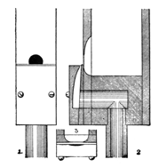

|
Harmonica German Harmonika German Flöte-Harmonica German |
Harmonica Flute English? Wohlklang German |
A small-scaled flute/string hybrid of 8' pitch, having a soft, bright tone. It is usually made of wood, bearded (according to Wedgwood), and sometimes slightly pyramidal (according to Audsley). Maclean considers it to be virtually an Echo Violone. Audsley provides the illustration reproduced here, with the following description:
 Some German organ-builders use scales which give the pipes of the Harmonica a greater depth than width. An example of this treatment obtains in the fine stop in the [Church of St. Bartholomew] Armley [England] Organ, in which the pipes from middle c1 to the top note are about twice their width in depth. Schulze seems to have found this extreme proportion favorable to the production of very soft and refined qualities of tone. The chief peculiarity of the Harmonica pipe is the formation of its mouth and attendant cap, shown in the accompanying illustration, which presents a Front View and Sections of the mouth portion of the c1 pipe of the Armley stop. It will be seen that the mouth is circular, hollowed on the inside of the pipe so as to present a thin lip to the wind-stream. The manner in which this is done is shown in the Sections 2 and 3. The size of the circular mouth varies according to the quality and strength of the tone desired, but it should not be less than one-half the internal width of the pipe. It will be observed in Section 2 that the cap is compound, being formed of an inner, wedge-shaped piece, which forms the lower lip of the mouth; and in outer piece, in which the wind-way is carefully cut in the manner shown, in block, in the Transverse Section of the mouth, 3. In the formation of the compound caps extreme care and accuracy must be observed in graduating the thickness and slope of the wedge-piece, and smoothly rounding and polishing with black-lead its upper edge or lip. The chief difficulty in connection with the voicing of this beautiful stop lies in the adjustment of both parts of the caps with relation to the circular mouths, and the exact proportions of the wind-ways, so as to obtain a perfectly even intonation throughout the compass. As a rule, the cap is adjusted to cover about one-third of the diameter of the mouth, but different positions are adopted according to the tonality desired. While pine may be used for the sides and backs of the pipes, it is necessary, with such a form of mouth, for their fronts and caps to be of some close-grained hard wood: preferably beech for the caps.
Audsley specifies wind pressure of 1 1/2" to 2 1/2", and provides two scales, both for square pipes, one used by Haas, a German organ-builder, the other recommended by Audsley himself, the latter having a ratio of 1:2.66 (halving on the 18th pipe):
| CC | C | c1 | c2 | c3 | c4 | |
|---|---|---|---|---|---|---|
| Haas | 66mm | 40mm | 24mm | 15mm | 9mm | |
| Audsley | 2.84" | 1.74" | 1.06" | 0.65" | 0.40" | 0.25" |
According to Grove it was used by some 19th century builders for various soft stops, including a free reed. Skinner supports the idea of Harmonica as a free reed, considering it to be more or less synonymous with Physharmonika. Williams dates the name from as early as 1781. No examples of this reed form are known.
Osiris contains five examples of Harmonika at 8' and one at 16', three examples of Harmonica at 8' and one at 16', and one example of Flöte Harmonika. No examples of Harmonica Flute or Wohlklang are known.
Harmonica 8', Choir; Church of St. Bartholomew, Armley, England; Schulze 1866-69.
Harmonika 8', Oberwerk; Cathedral, Riga, Latvia; Walcker 1883.
Harmonica 8', Oberwerk; Harmonica 16', Echowerk; Dreifaltigkeitskirche, Liepaja/Libau (Lettland), Latvia; Grüneberg 1885.
Harmonika 8', Schwellwerk; Stadtkirche, Winterthur, Switzerland; Walcker 1888.
Harmonica 8', 3rd manual; Cathedral of Lund, Sweden; Walcker.
Harmonica 8', Echo; Parish Church, Doncaster, England; Schulze.
Flöte Harmonika 8', Schwellwerk; Tuomiokirkko, Kuopio, Finland; Christersen 1986.
|
Original site compiled by Edward L. Stauff. For educational use only. Harmonica.html - Last updated 16 January 2003. |
Home Full Index |